LAURIN LIMITED GUIDEBOOK ©
INSTALLERE DHCP
DHCP (Dynamic Host Configuration Protocol) blir brukt til å spre IP'er til andre maskiner som kobler til nettverket.
Nå skal vi installere DHCP, naviger til Dashboard og trykk på «Add roles and features».
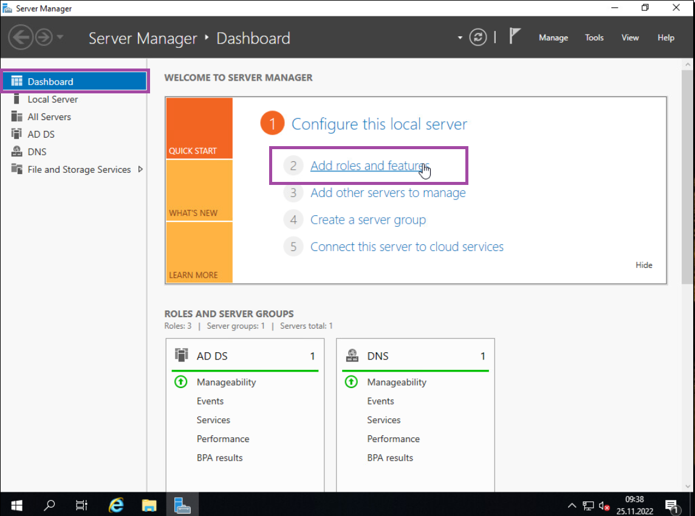Når «Server Roles» fanen er åpen, trykk på next, helt til du kommer til «Server Roles» lista. Her trykker du på «DHCP Server», også trykker du på «Add Features».
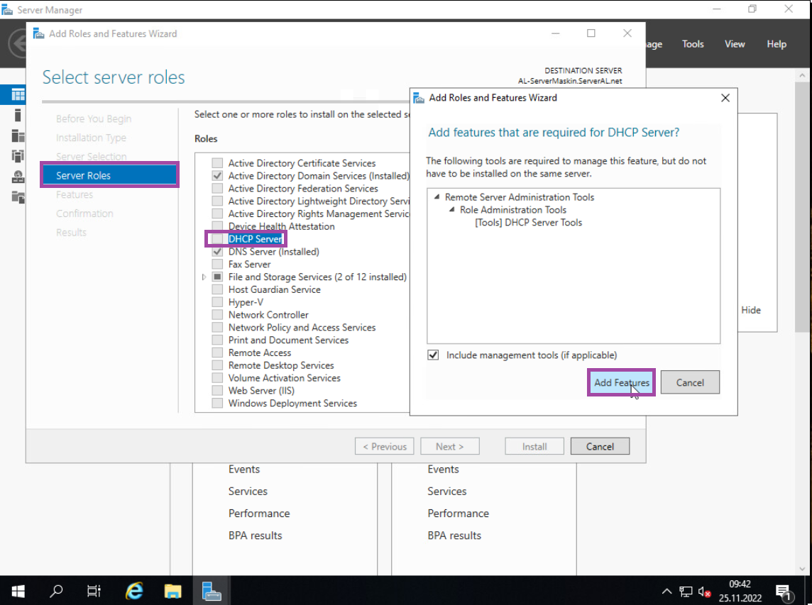Trykk på «Next» helt til du kommer til «Confirmation» hvor du da kan trykke på «Install». Jeg anbefaler at du også trykker på «Restart the destination server automatically if required», for å oppdatere serveren.
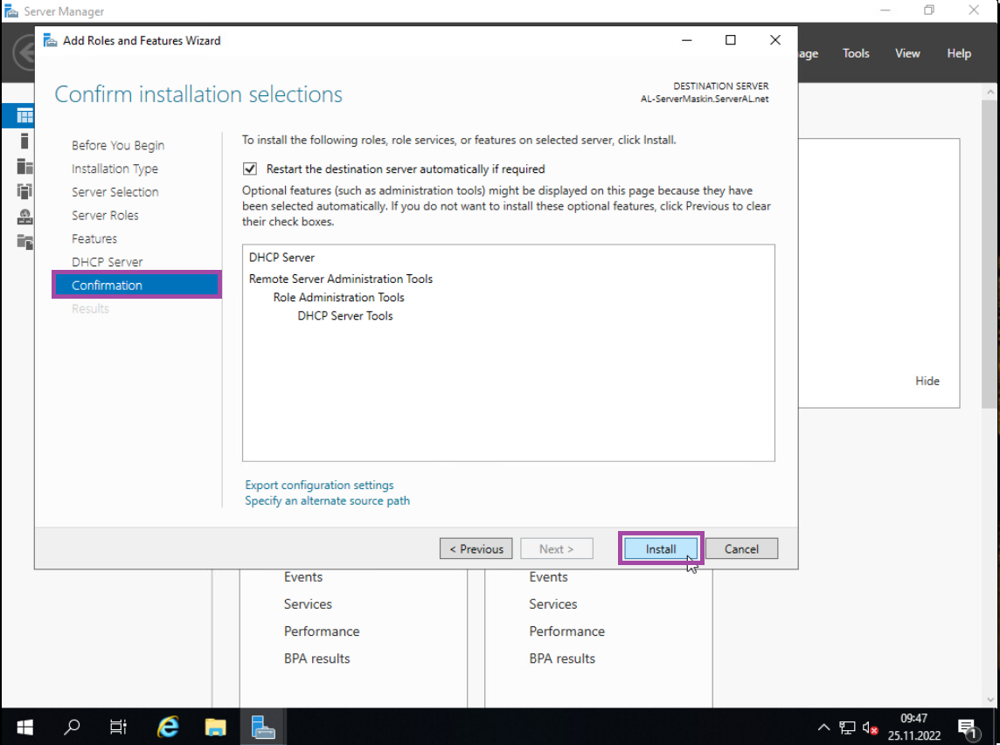Når DHCP er ferdig installert, så navigerer du til DHCP fanen i server manager. Her trykker du på «More…» som ligger i den gule varsels boksen, også trykker du på «Complete DHCP configuration».
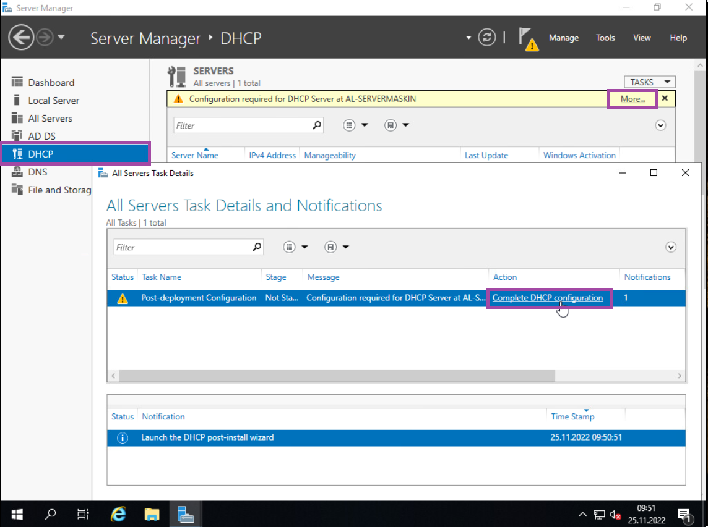Her skal «Post Install Configuration Wizard» komme opp, da trykker du bare på «Next», så du kommer til «Authorization» fanen. Sjekk at «Use the following user’s credentials» er huket av, og har et brukernavn. Ikke huk av på noe annet, og trykk på «Commit».
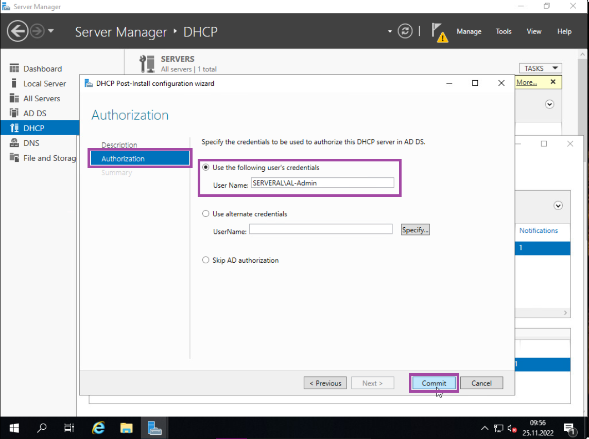Når DHCP er ferdig konfigurert, så navigerer du til «Tools» i øverst høyre hjørne i Server Manager, også trykker du på «DHCP».
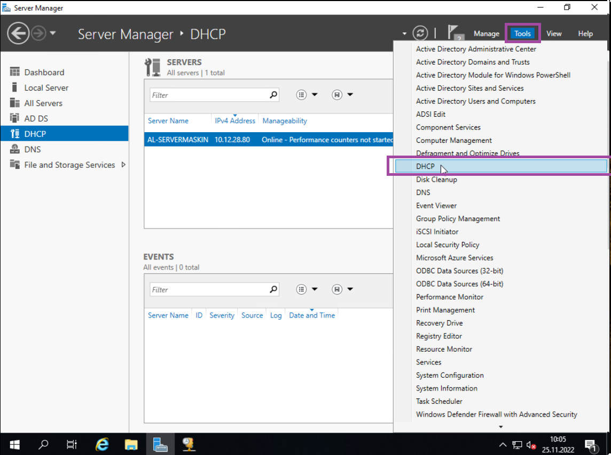Naviger ned server lista i DHCP fanen, og finn «IPv4». Trykk på den, også høyreklikk den, hvor du da kan trykke på «New Scope…».
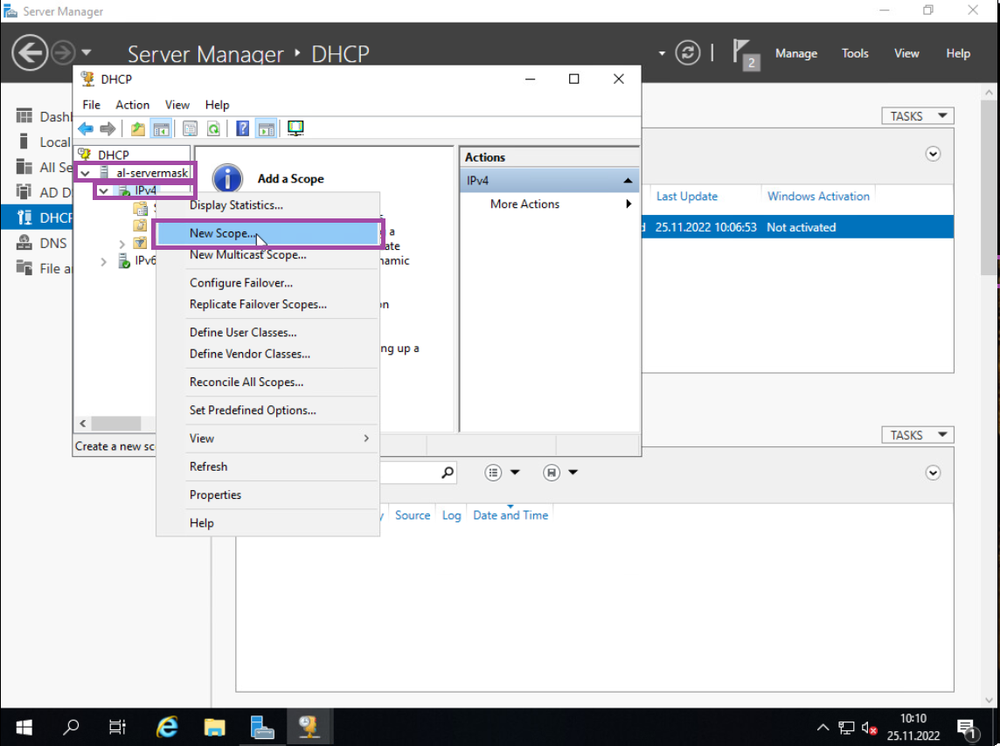Her skal «New Scope Wizard» åpne, trykk på next så du kan angi et «Scope Name». Gi den et valgfritt navn og trykk på «Next».
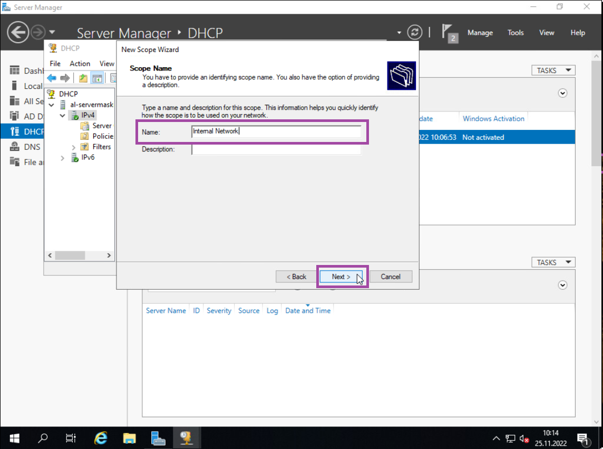Her må du stille in en IP range for nettverket, så skriv som følgende;
Start IP Address: 10.12.(elevnr).2
End IP Address: 10.12.(elevnr).254
Length: 24
Subnet Mask: 255.255.255.0
Etter det, så trykker du på «Next» for å gå videre.
Du skal IKKE ekskludere noen IP’er, så da er det bare å trykke på «Next» her.
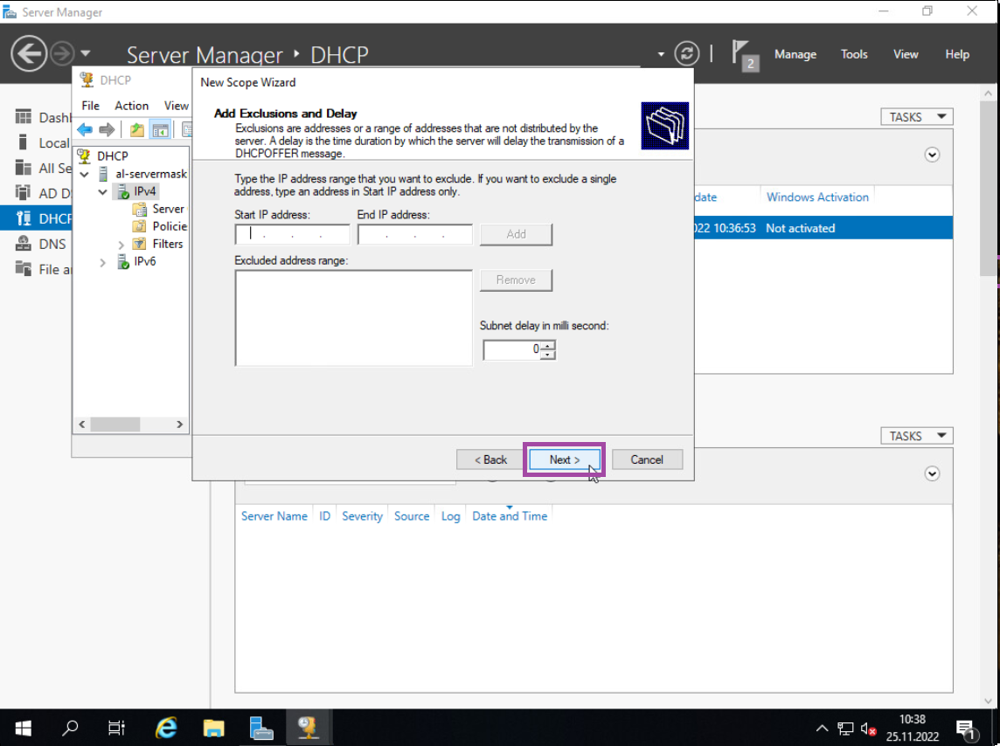Når du er her, så kan du velge «Lease Duration», jeg anbefaler at du lar den stå som den er (8 dager). Så trykker du bare på «Next» igjen.
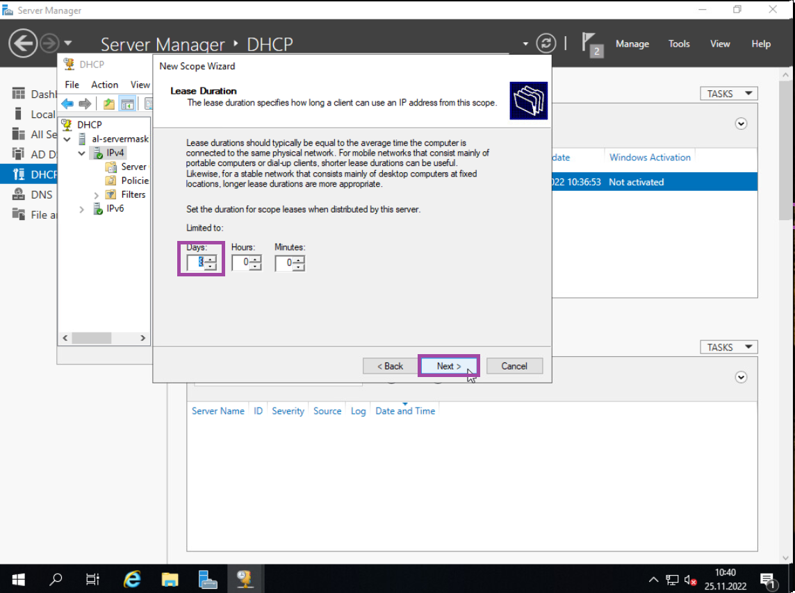Trykk på «Yes, I want to configure these options now» og fortsett ved å trykke på «Next».
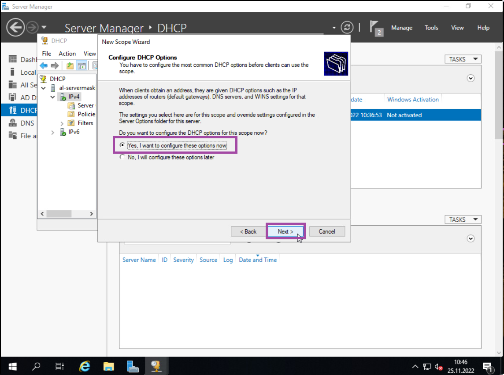
Her skal du skrive inn Default Gateway IP’en, som er da som følgende;
10.12.(elevnr).1
Trykk på «Add», også fortsett ved å trykke på «Next».
Hvis domenet til serveren dukker opp, og IP’en. Så er det bare å trykke på «Next» helt til du kommer til «Finish». (Trykk da på «Finish» når du kan)
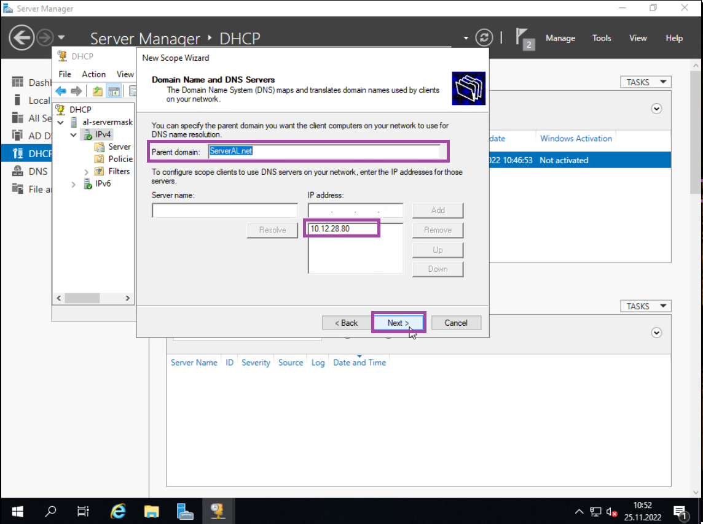Hvis du ser Scope mappen inni IPv4 listen, så har du ferdig installert DHCP.
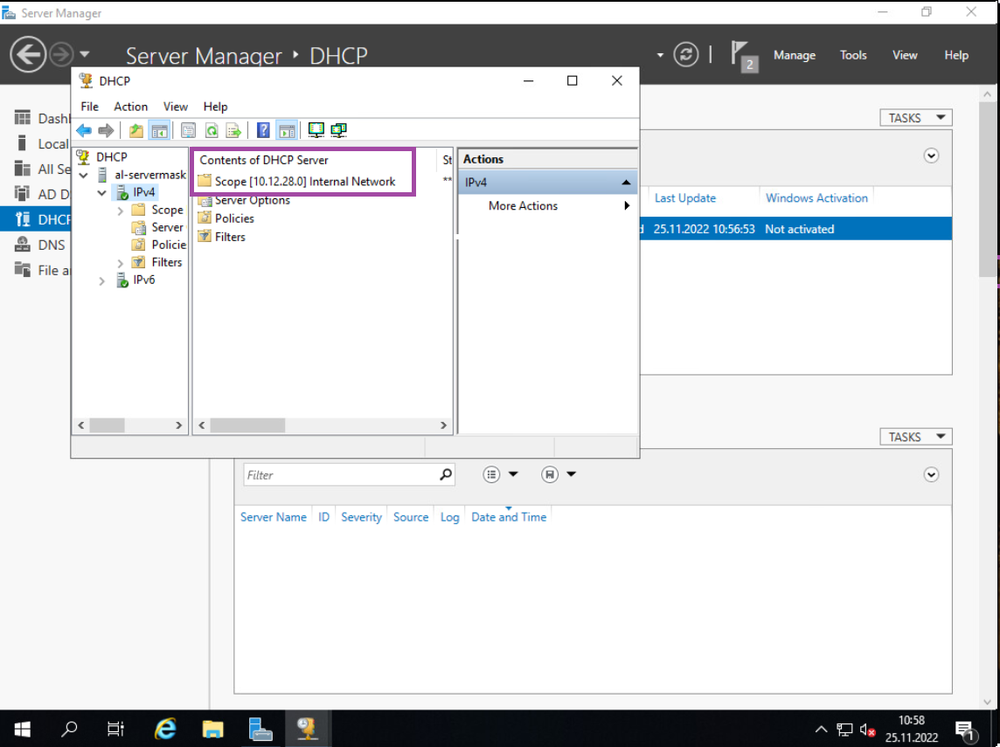Fortsett til neste steg